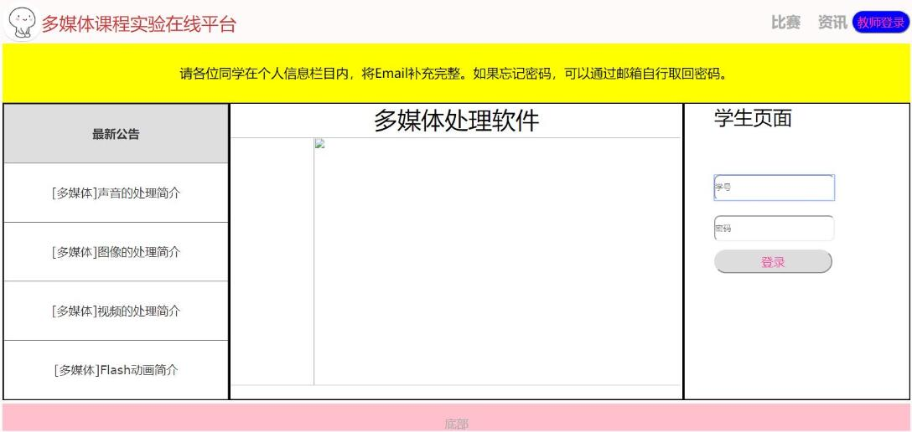

多媒体实验五
多媒体课程实验在线平台
计科1803班孙创昱
实验目的
熟悉Dreamweaver CS6软件（可以选用最新版本） 掌握网页中文本格式的编辑 掌握多媒体元素的插入及格式编辑 掌握在网页中创建文本的超链接的方法 掌握利用图像热点区域创建超链接的方法 掌握锚记的命名以及锚链接的创建方法
实验内容
使用Adobe Premiere Pro CC对视频进行剪辑，添加特效等操作。
实验方法
制作“多媒体课程实验在线平台”，包含主网页（index.html）和子网页(注意命名方便识别)，要美观大方 主网页面设计风格不限，包含课程名及五次实验名称，其他元素可选择添加 子网页，每个子网页为独立的实验介绍，如：实验目的，实验内容，实验方法及步骤等可以适当上传自己的作品作为实验的参考效果，注意文件不要太大 每个之网页都可以返回主页及跳转到其他子网页
实验步骤
步骤一 用Div设置好布局

步骤二 设计界面内容
步骤三 完善并调整颜色

步骤四 调整主页颜色和内容
步骤五 完成子界面的编写
实验心得
这个实验做了很久，学了一周学完了HTML，CSS，JavaScript基础知识，整理好了博客，接着就是动手做实验。设计页面布局，调整界面内容，调整特效，最终做出现在这个页面。虽然有挺多不足的，但是我自己很满意，因为我从中学到了很多知识。很感激能有这么一次锻炼自己能力的机会。
好好学习，天天向上
Copyright © SunCY